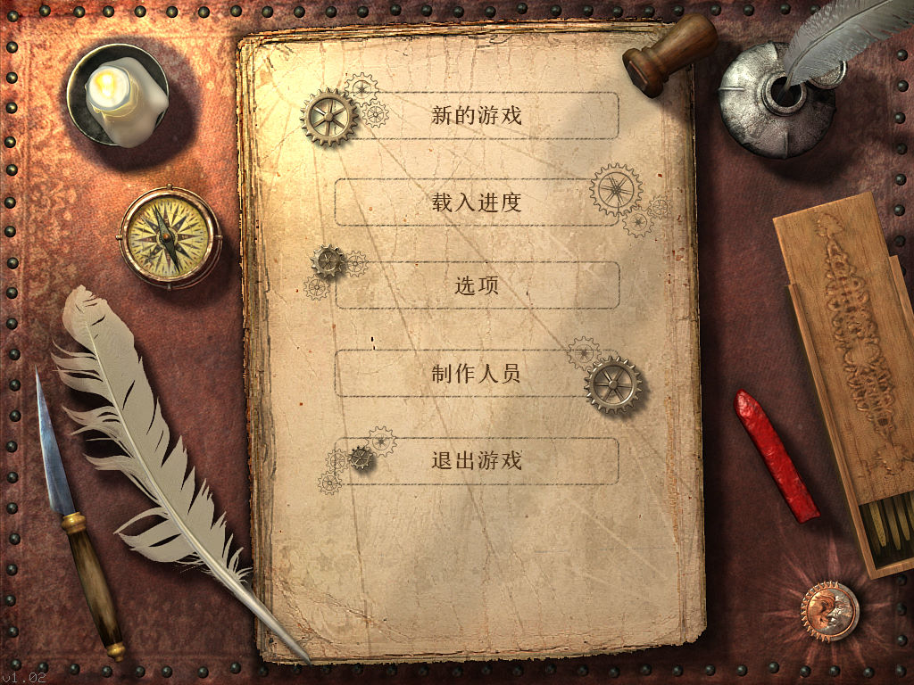
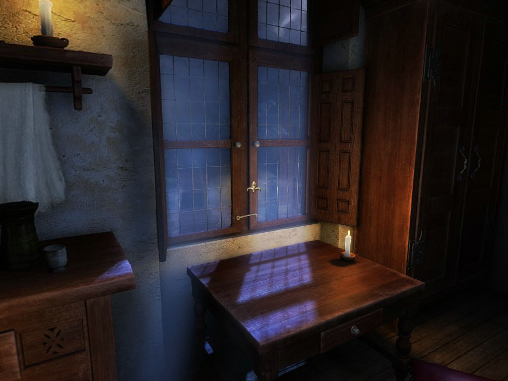

名稱：達芬奇的秘密：被禁的手稿／達文西的秘密：禁忌手稿 (The Secrets of Da Vinci: The Forbidden Manuscript，簡中／英文版) 簡介：Kheops 2006年出品的冒險解謎遊戲，由Nobilis代理發行 [待補]。

保護：光碟Tages 5.4 備註：非安裝移機者，需修改config.ini裡的PATH指向目錄，可設定為".\datas"。 備註：目前只有Win64+dgVoodo2可以正常執行，其餘均會黑屏（左下角顯示1.02）。記得要 修改config.ini為： bUseHardware=1 bUse32BitsSprites=1 bUse32BitsScreen=1 bFullScreen=1 bScreenResolution=2 備註：簡中漢化版必須在簡中系統上執行，否則會亂碼。Win64可使用Locale Emulator。 備註：簡中漢化版目前文字顯示仍有些問題，容易當機跳出，建議玩英文版。 檔案：nocd.rar = 免光碟檔 chs.rar = 簡中漢化檔